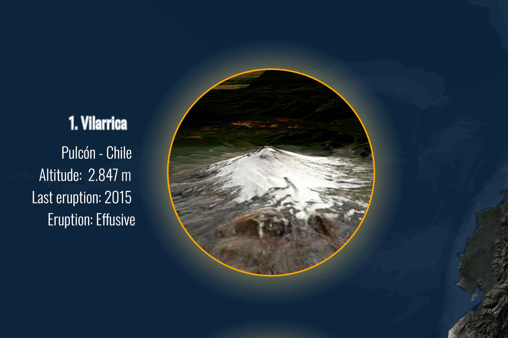
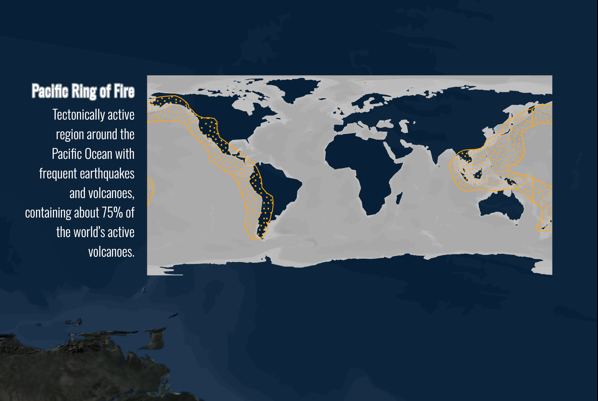
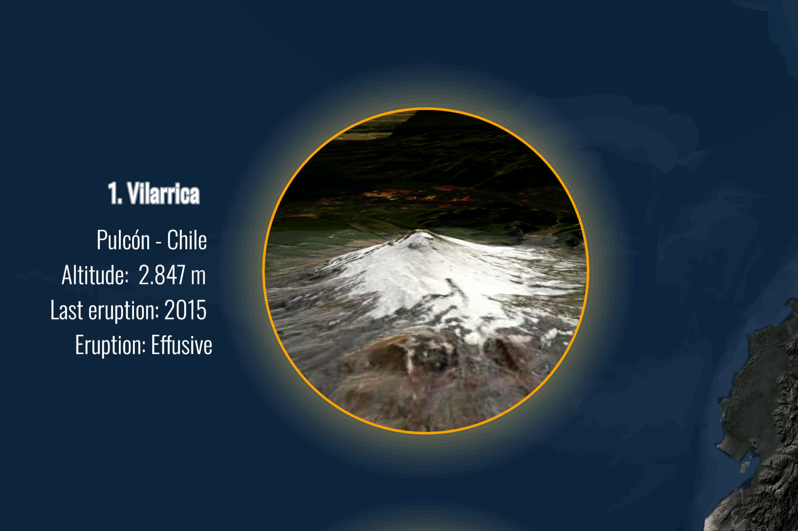
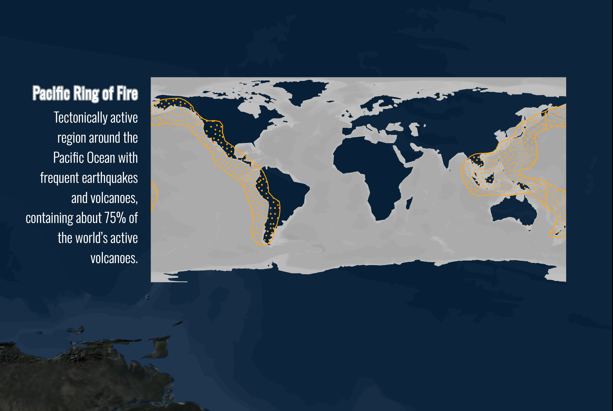

Most Active Volcanoes in South America
Thematic cartographic representation highlighting the spatial distribution of the most active volcanoes across South America, emphasizing geological patterns and regional volcanic dynamics.

The map integrates geological datasets and visual hierarchy principles to support spatial interpretation of volcanic activity. Symbolization and layout were designed to balance scientific accuracy and visual clarity for analytical and educational purposes.
Details
 


